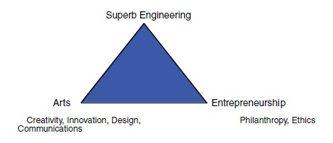

“Olin’s mission does not stop after a student graduates. Rather it is carried forward, an integral part of each graduate, into creative endeavors far and wide. What assures the creativity?
A mind able to triangulate its corners.”
This is how I began the white paper circulated around Olin in mid-late January, 2001. At the time, Olin consisted of twelve faculty, a leadership team, plus administrative support; students wouldn’t arrive till the following fall. I wrote the document because Rod Crafts, then Dean of Students, and Steve Holt (then Professor of Physics) pulled me aside in early January and said, “we believe the vision you paint for the college is the strongest so far, so why don’t you write it up.” The resulting white paper presented the following argument:
The Renaissance, a time of fluid boundaries between science and art, produced feats of engineering design, artistic mastery, and an entrepreneurial spirit that continue to inspire and motivate humankind. At [Olin College of Engineering], our students learn to speak the languages of engineering, science, mathematics, the arts, and business—not as separate subjects—but all together. We emphasize this essentially trilingual approach (engineering/science/math, arts, entrepreneurship) because we believe that a mind able to reach all its corners becomes a fully functioning intelligence capable of reaping the kind of “breakthrough” thinking that moves the human condition further.
Olin students create in many fields while at the College—in engineering, mathematics, science, art/music/film/video/writing/theater/performance, and business—just as they will after graduating. We believe that pursuing projects and knowledge in all of these concentrations fuels an individual’s creativity, as does the ability to communicate these pursuits to a larger audience. It is this synergistic creativity that is ultimately Olin’s goal—to produce and enhance the resilient, resourceful, artistic, intelligent, and technically astute individual who will take these gifts and basically go out and change the world in some way. This catalyst for change touches another of Olin’s core values: that change be beneficial to human kind. Philanthropy, ethics, and communication figure prominently in the [Olin] worldview. Towards that end, our faculty includes social scientists with specialties in past and current ethical and historical issues, as well as experts in communication so that our students have the skills to reach others with their ideas.
Given the emphasis on creating in multiple fields which, by its very nature, often necessitates “going out on a limb”, students’ participation and ever-increasing fluency in Engineering, Entrepreneurship, the Arts helps them become more confident in their abilities. Ultimately—after an undergraduate education steeped in “doing” and “thinking” both singly and collaboratively—they find themselves comfortable with risk, having spent part of their undergraduate years becoming acquainted with it. A high comfort level with risk provides a key character trait of the entrepreneur, where entrepreneur is defined broadly as an independent, active, self-sufficient individual who “can articulate a vision and bring it to fruition” [Prof. Steve Schiffman, Senior Olin Partner]. Risk-tolerance enables graduates to pursue business opportunities, inventions, innovative projects, not to mention dreams, new theories, and ideas from which others may shrink or cast as impossible. Of course, history is awash with great ventures that were so summarily dismissed. Olin graduates are not shrinking violets and they do not take no for an answer! They are a little bit uppity (though respectfully so).
Here is the complete white paper.
“Creating the Renaissance Engineer” turned out to be a prescient work. I personally gave each member of our faculty and administration a copy and then met with each. The paper engendered key conversations among the Olin community. It framed useful language by giving Olin a three-cornered vision embodying Engineering, the Arts, and Entrepreneurship. These three anchors for our new college were next captured in a visual image which became known as the “Olin Triangle”, as shown in Figure 1.
Figure 1. The Olin Triangle showing the three “major dimensions of an Olin engineering education.”
By showing the three “major dimensions of an Olin engineering education”, the Olin Triangle inspired our early vision, a vision that has “stood the test of time” and “is still used to guide curricular discussions”, as remarked in a 2005 publication by Olin’s then leadership team—President (Richard Miller) , Provost (David Kerns), and Vice President for Innovation & Research (Sherra Kerns)—entitled “Designing from a Blank Slate: The Development of the Initial Olin College Curriculum”, published by the National Academies Press in 2005.
In sum, “Creating the Renaissance Engineer” helped jumpstart conversations among Olin stakeholders in 2001, and contributed to Olin's vision, one that had lasting impact during the critical formative years prior to ABET accreditation in 2006. Though written decades ago, it speaks to developing students, as well as building & sustaining the College (Map 1), before our college-to-be had students or buildings. It reflects my three overarching themes (Map 3)—lifelong learning, intrinsic motivation, and the creative process—to present a vision for Olin College. By encouraging the ability to triangulate Engineering, the Arts, and Entrepreneurship, while emphasizing their synergy (Map 2), the white paper’s message still resonates with students today, given their talents in engineering, the arts, and their ability to bring an idea to realization. Its curricular impact endures, as evidenced by the engineering, artistic, and entrepreneurship courses offered at Olin.